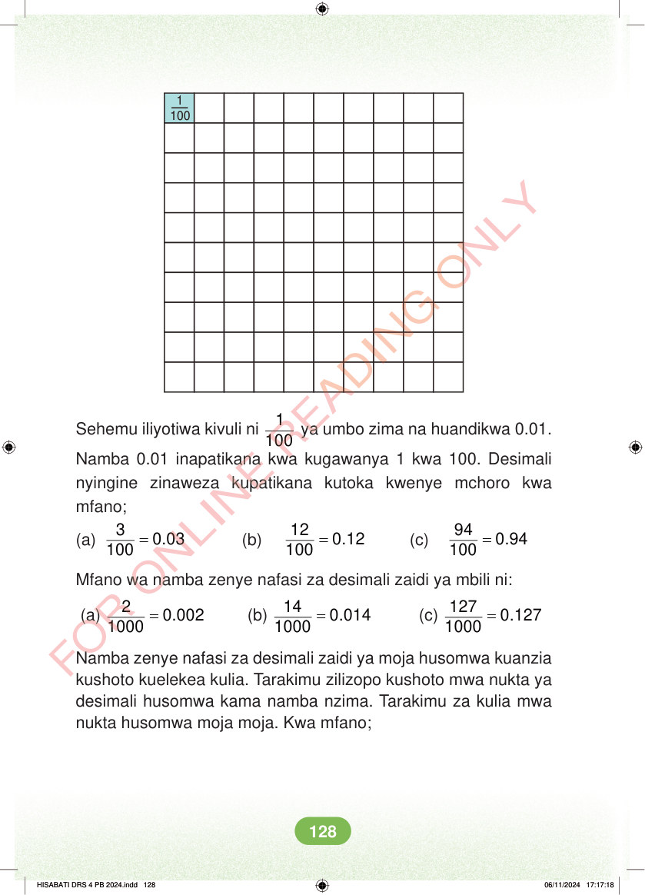

1 100 Sehemu iliyotiwa kivuli ni 1 100 ya umbo zima na huandikwa 0.01. Namba 0.01 inapatikana kwa kugawanya 1 kwa 100. Desimali nyingine zinaweza kupatikana kutoka kwenye mchoro kwa mfano; (a) = 3 0.03 100 (b) = 12 0.12 100 (c) = 94 0.94 100 Mfano wa namba zenye nafasi za desimali zaidi ya mbili ni: (a) = 2 0.002 1000 (b) = 14 0.014 1000 (c) = 127 0.127 1000 Namba zenye nafasi za desimali zaidi ya moja husomwa kuanzia kushoto kuelekea kulia. Tarakimu zilizopo kushoto mwa nukta ya desimali husomwa kama namba nzima. Tarakimu za kulia mwa nukta husomwa moja moja. Kwa mfano; HISABATI DRS 4 PB 2024.indd 128 HISABATI DRS 4 PB 2024.indd 128 06/11/2024 17:17:18 06/11/2024 17:17:18